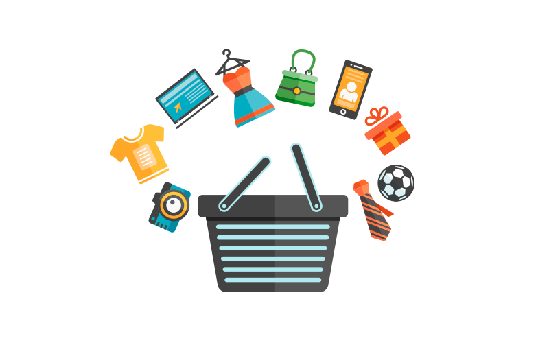

Pagina Principal
Somos InovaTech y te damos la bienvenida a nuestra pagina web, donde podras encontrar una gran variedad de servicios y productos relacionados con las Tecnologías de la Información. Asi que te invitamos a navegar y a disfrutar de los contenidos que ponemos a tu disposicion.
Servicios
En InovTech proporciona servicios informáticos altamente eficientes además de un servicio integral que engloba todos los servicios de distintas áreas. Disponemos de diversas unidades de negocio ampliamente especializadas en ofrecer soluciones y servicios informáticos eficientes en su correspondiente área de trabajo. Ofrecemos, además, la posibilidad de un servicio integral, en lo que a Tecnologías de la Información se refiere, desde el diseño del plan de sistemas de información hasta la implantación y mantenimiento de los mismos, para que cualquier empresa u organización pueda contar con la solución informática adecuada y óptima en todo momento, y en línea con sus objetivos.
- Desarrollo de Software
- Sistemas de Informacion Geografica
- Aplicaciones de movilidad
- Software Gestion Empresarial
- Gestion de sstemas
- Consultoria Informatica
- Web y Posicionamiento
Productos

A continuación enumeramos una serie de productos, algunos diseñados y desarrollados por nosotros y otros que, por su calidad, hemos seleccionado y podemos ofrecerle.
- Distineo: permite la edición de los contenidos de tu página web, pudiendo gestionarla online fácilmente y cambiar o ampliar su información en cualquier momento
- a3Gestión del tiempo: herramienta para el registro horario y el control de presencia de los trabajadores que te permitirá cumplir con la nueva Ley sobre el Registro de Jornada obligatori
- Tweri: ¿quieres estar tranquilo cuando un familiar que padece Alzheimer sale de paseo? Tweri es una solución de movilidad, para iPhone y Android, que ofrece tranquilidad a los cuidadores y libertad al propio enfermo en las primeras etapas de la enfermedad
- La Cultura en tu Bolsillo: herramienta web y móvil para facilitar a los ayuntamientos locales la promoción y difusión de los eventos culturales programados en su municipio
- KAT Treasury: producto para una gestión avanzada de tus finanzas (previsiones de caja, conciliación y compensación de movimientos y extractos bancarios, cuadros de amortización financieros, etc.)
- a3Nom Cloud:Con a3Nom Cloud podrás automatizar los procesos, ahorrar costes, controlar el absentismo o las vacaciones, actualizar las tablas salariales, general modelos de IRPF… y todo ello desde la nube, de forma sencilla y sin errores.
Testimonios
Testimonios de clientes:

Covirán tiene un claro compromiso de servicio con sus socios. InovaTech ha ayudado al cumplimiento de estos objetivos con el proyecto de tracking de nuestras entregas.
Enrique Martín
Director Logística Grupo Coviran

InovaTech es nuestro socio tecnológico desde hace más de 20 años. A través de la tecnología desarrollada nos permite mejorar en la planificación y gestión de los servicios y en la comunicación con nuestros usuarios.
Eduardo Losada
Gerente Maitours

La fiabilidad en la recopilación y tratamiento de datos en los sistemas de información es imprescindible, e InovaTech nos aporta la calidad necesaria en este campo con tiempos de respuesta acordes a nuestras necesidades.
Beatriz Panadés
Directora Adjunta en Vegap
Equipo

Hemos constituido un gran equipo de profesionales capacitados y motivados para ofrecer soluciones integrales con la máxima calidad. Es la base del éxito del trabajo realizado para el cliente, y del continuo avance de la compañía. En InovaTech:
- Seleccionamos perfiles personales.
- Los formamos y/o perfeccionamos como profesionales altamente cualificados y fidelizados
- Establecemos con ellos planes de formación continua
- Trabajamos por la conciliación laboral y por proporcionar un buen ambiente de trabajo
En InovaTech apostamos por el talento y nos gusta ver cómo nuestro equipo crece. Si quieres formar parte de una empresa consolidada en el sector de las Tecnologías de la Información, no dudes en consultar las vacantes que tenemos abiertas actualmente. ¡Puede que alguna de ellas se ajuste a lo que estás buscando
Contacto

Sabemos cómo podemos ayudarte.Tanto si eres una empresa en busca de un proyecto o simplemente quieres saber más acerca de nosotros, estaremos encantados de escucharte.